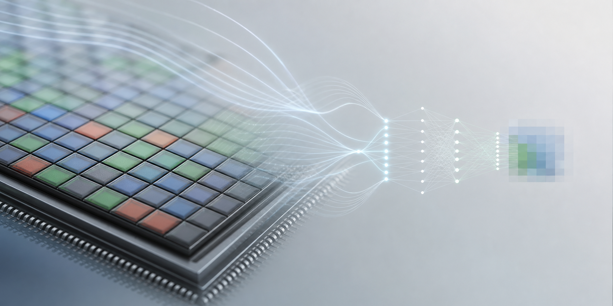

Teppei Kurita
Image Sensor R&D / AI Signal Processing / Computational Imaging
Teppei Kurita
R&D engineer working at the intersection of image sensors, AI signal processing, and computational imaging.

About
Research and engineering for real imaging systems
I am an R&D engineer working on image sensor signal processing, AI-based imaging, and computational imaging. My work focuses on practical imaging systems, lightweight neural networks, RAW image processing, and real-world constraints in image sensor pipelines.
I also have experience in academic community activities and industry relations in computer vision and image processing, including Visiting Researcher experience at UCLA.
Highlights
Profile Highlights
Image sensor R&D
Signal processing for sensor pipelines, RAW data, and practical camera systems.
AI-based signal processing
Learning-based imaging methods designed with efficiency and deployment constraints in mind.
Computational imaging
Algorithms that combine optics, sensing, reconstruction, and downstream perception.
Computational Imaging input
Assisted with polarization imaging content for Computational Imaging (MIT Press, 2022); acknowledged in related materials.
Practical imaging systems
Experience connecting imaging algorithms with real-world sensor constraints.
Competition results
Recognized results in Kaggle and CVPR Workshop imaging challenges.
Public research outputs
Multiple peer-reviewed results at leading computer vision venues; details are available on Google Scholar.
Patent record
Dozens of public patent records in imaging and signal processing; details are available on Google Patents.
Academic and industry relations
Community activity across computer vision, image processing, and industry relations.
Expertise
Technical Focus
Selected Competition Results
Measurable results in imaging and AI challenges
- 3rd Place, NTIRE 2026 Efficient Low Light Image Enhancement Challenge, CVPR Workshop 2026
- 3rd Place / Gold Medal, RSNA 2024 Lumbar Spine Degenerative Classification, Kaggle
- Kaggle Competitions Master
Awards & Recognition
Awards across imaging, AI, and research communities
- Educational Merit Award, RSNA Lumbar Spine Degenerative Classification AI Challenge, 2024
- Takagi Award, Symposium on Sensing via Image Information, 2021
- Audience Award, Symposium on Sensing via Image Information, 2018
- Best Academic Paper Award, Symposium on Sensing via Image Information, 2018
- Research Award, Game Programming Workshop, 2008
Professional Activities
Community
- Corporate Relations Vice Chair, MIRU 2026
- Steering Committee Member, IPSJ SIG-CVIM, Apr. 2021 – Mar. 2026
Languages & Credentials
Additional profile
- Japanese: Native
- English: Business level
- Kaggle Competitions Master
- Real Estate Transaction Agent, Japan
Links
Profiles and Research Links
Contact
Professional inquiries
Please contact me via LinkedIn or one of the listed professional profiles.